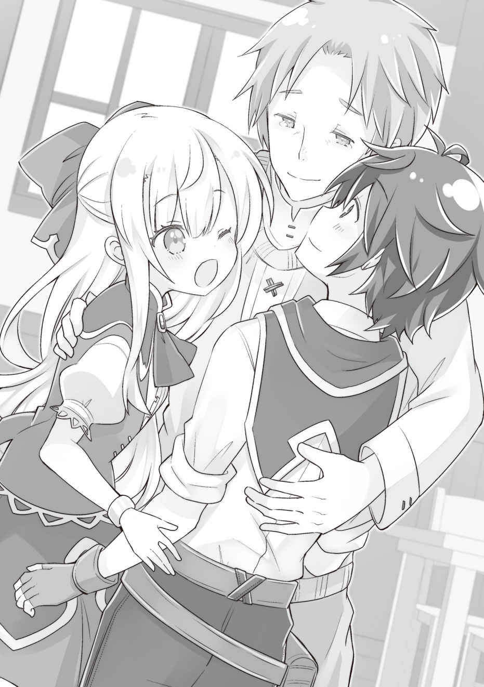
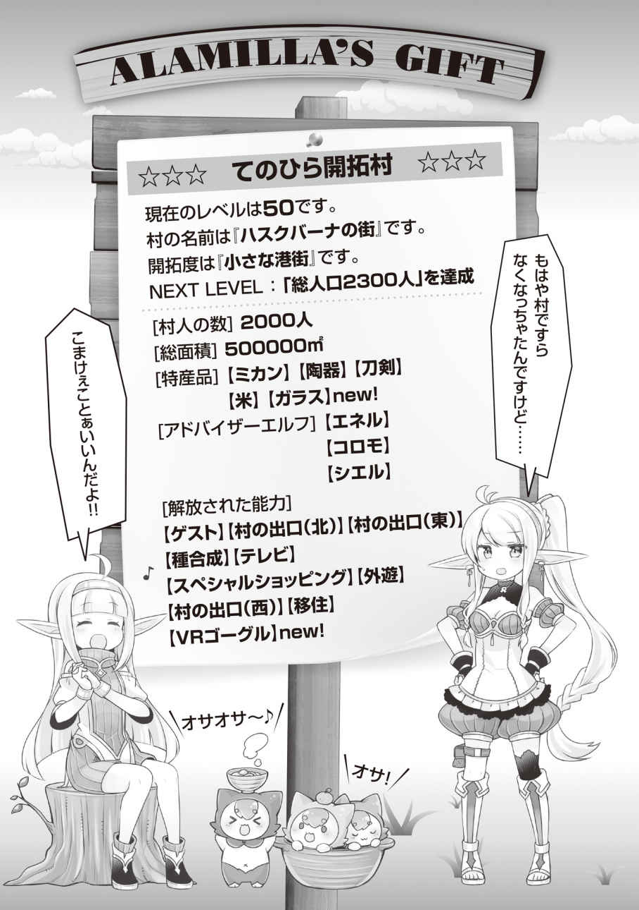

エピローグ
「変わんないな……この辺り…………」
「そりゃ、三年くらいじゃあ変わんないよ、お兄ちゃん」
「そういうもんかな」
俺とルキアは、故郷へ戻ってきていた。
二人で祝福の儀式を受けた（俺は厳密には受けてないけど）街の港まで船に乗り、そこから先は馬車の旅だ。
それなりに時間が掛かってしまったが、兄妹水いらずで悪くない旅路だったと思う。思い出話に花が咲いた。
俺たちが暮らしていた街は、ラベルダ王国の中でも、中堅の都市である。暮らしていたころは、あまり意識していなかったが古い街並みだ。
もしかしなくても、魔法文明時代から続く街だったのだろう。
それにしても、俺たちが離れる前と何も変わらない。
まるで、時が止まっているかのようだ。
「……マスタ、もう到着？」
「ああ。アビスも護衛ありがとな」
「……うん。ぜんぜん危なくなかったけどね」
兄妹水いらずと言ったが、護衛としてアビスにも付いてきてもらっていた。そうでなくても、親父にはアビスのことを一番に紹介したかったというのもある。
「……ここがマスタと妹ちゃんの育った街なんだね」
「そうだよ。祝福の儀式まで、ろくに外に出たこともなかったな」
「お兄ちゃんは不良だったから、学校も全然来なかったし、わりと一人で冒険してたと思うけどー？」
「いや、一人で行ける距離なんて、たかが知れてるから」
そんな、世間話をしながら古い街並みを歩く。
俺とルキアとアビスは、フードを深く被った旅装束姿で歩いているため、それほど目立つ感じはなさそうだが、この辺りは観光客などはほとんど来ない地域。怪しい奴がいるなどと通報でもされたら面倒だ。あんまり、うろうろせず目的地へ行かないとな。
「この時間だったら、もうパパ戻ってるかな」
俺とアビスと三人きりの長旅だったからか、ルキアの口調がまた子どものころのものに戻ってしまった。まあ、故郷に戻ってきているんだから、仕方ないけど。
「特別な仕事がなければ、いるはずだけど」
親父は光の神ルークスの祝福者だったから、日が暮れてから仕事を頼まれて神殿に戻ることも多かった。
だが、だいたいいつも夕方前には戻ってきていたので、今の時間なら家にいるだろう。
「心臓がドキドキしてきた」
「私も……。触ってみる？」
「そういう冗談言うとホントに触るぞ」
「はーい、どうぞ」
わざとらしく腕を寄せて胸を強調するルキア。
こりゃいかん。ユーリによる矯正はいまいち上手くいっていないようだ。
「もう、そこの角を曲がれば見えるぞ……」
前世で、こういうシチュエーションの物語ってけっこう何度か見た記憶がある。
角を曲がると家がなくなって更地になってたりとか──いや、やめよう、イヤな想像は。
頭を振り想像を打ち消して角を曲がると、俺たちの実家はちゃんとそこにあった。
島に捨てられた時、何度も夢に見た、石と木で作られた古い家。
瞬間、目頭が熱くなって、涙が溢れてくるのを止められなかった。
──もう戻れないと思っていた。
戻れることがわかってからも、自分がこんな気持ちになるなんて思わなかった。
──本当にこの三年半でいろいろなことがあった。
十二歳の時に祝福の儀式の最中に拉致されて、絶海の孤島に捨てられたこと。
アビスと出会ったこと。レンや戦士君たちの誕生。島でのサバイバル。
一年が経った春、神殿の船で俺と同じアラミラの祝福者であるカエデが島に連れてこられたこと。そのときに、島を開拓することを決めたこと。
サラとユーリ、近衛隊のみんなとの出会い。ファウゼルと初めて会ったのもその時で、まさか仲間になるなんて、その時は想像もしていなかったな。
そして、翼人たちとの出会い。リーベルの能力にはずいぶん助けられた。
カエデの実家を探しに出て、なぜか父親であるエドワードと戦うことになったこと。
時の祝福者であるローザが島に捨てられて、それからあれよあれよと神殿の総本山まで、ルキアを救いに行ったこと。
守護聖人アーサーから、この世界の秘密を聞いたこと。
ギリギリのところで、ルキアを助け出すことができたこと。
島を開拓して、ファウゼルの実家である侯爵家と友誼を結ぶことができたこと。
それ以外にも、語り尽くせぬことがたくさんある。
いろいろな人に助けてもらった。
エネル、コロモ、シエルにもたくさん助けてもらった。
『てのひら開拓村』の能力がなかったら、ここまで戻ってくることは絶対にできなかった。
ルキアだって助けられなかっただろう。
アーサーとステイシーの再会と同じくらい、俺とルキアがここに立っているのは、たくさんの努力と奇跡が結実したものだと言えた。
「……マスタ。大丈夫？」
「ああ、ちょっと──感極まった」
「お兄ちゃん、平気？ あんまり、ここにいると変に思われるかもしんないし、行こう」
「そうだな」
ルキアは、二年間の修道女時代には手紙のやりとりをしていたからか、懐かしさこそあれ、そこまでの感慨はないらしい。
いよいよ、家の前まで来た。
親父は中にいるのか、それとも留守なのか。少なくとも庭には出ていないようだ。
サプライズで帰るのってどうなんだ？ 今更、そんなことを考える。
事前に手紙を出しておけばよかったが、親父宛ての手紙だと検閲が入る可能性もあると思って、送っていなかった。だが、それは余計な心配のしすぎだっただろうか。
「ほーら。行くよ。お兄ちゃん、緊張してるの？」
「してる……。だって、俺って死んだと思われてるだろ、絶対」
「だったら、なおさら元気な姿見せてあげなきゃでしょ！」
ついまごついてしまう俺の背中を叩き、ルキアは躊躇なく扉を開いた。
「ただいまー！」
大きな声で帰宅を知らせるルキア。
俺とルキアとアビス。三人で玄関の中に入り、扉を閉める。
中に入ってすぐに感じる、懐かしい実家の匂い。
玄関の壁に飾られた、ルキアが小さいころに家族を描いた絵。
毎年の成長を刻み付けた柱。
この家は、それほど広い家じゃないから、玄関の先はすぐに居間になっている。
そこには家族で食事をする為の少し大きいテーブルがあって、ルキアなんかは学校の勉強をそのテーブルでやっていたものだ。
その居間のテーブルの前。
椅子に腰かけて、驚いた顔でこちらを見ている父親の姿があった。
「……カイ？ ルキア？ 二人なのか……？ ほんとうに……？」
力なく立ち上がり、よろよろとこちらに向かってくる親父。
俺の記憶にあったころよりも、少し老けたし、痩せた。
目にたくさんの涙を溜め、震えながら立ち上がるその姿に、ステイシーと再会したときのアーサーの姿がダブる。親父にとっても、俺とルキアは「もう二度と会えない」、失ってしまった子どもだったのだ。
「パーパ。オバケじゃないよ？ ルキア・ハスクバーナ！ 元気に帰還しました！」
ピシッと神官式の敬礼をするルキア。
妹は俺より離れてた期間が短いからか、ちょっとふざけるだけの余裕があるようだ。
俺は、いろいろな想いが込み上げてきて、まともに返事もできない。
「カイ……。お前は死んだと聞かされていた……」
「うん……心配かけて、ごめん。……もっと早く帰ってくればよかった」
「ほんとに……いつのまに、こんなに大きくなって……」
遠慮がちに俺とルキアの頬に触れる指先が震えている。
「パーパ、私のことはどう聞いていたの？」
「ルキア……、君も特別なお役目で……殉教したと思えと……遺体も戻すことはできないと言われていたんだよ」
「ひどい話ね！ とんだ嘘っぱちだわ！ まあ、でもこうして戻ってこられたから！」
やはり神殿は無慈悲だ。お役目といえば、なんでもありだと思っているのか。
「カイ……ルキア……。二人とも……生きて……生きてたんだな……。生きてた……！ お、おおおぉぉぉ…………おおお……」

俺とルキアを抱きしめて、嗚咽を漏らす親父。
「……ただいま。生きて……帰ってきたよ。父さんが驚くこと、たくさんあったんだ」
「私も、お兄ちゃんが助けてくれなかったら、ほんとに殉教するとこだったんだよ！」
俺たちはしばらく抱き合っていた。
親父がたった一人で暮らす家は、俺の記憶にあるときと、不自然なくらい何も変わっていなくて、それが俺たちの親不孝を感じさせた。
俺もルキアも大変な目にあっていたのだけど、でももっと早く来るべきだったと、父親の嗚咽が胸を締め付けるのだった。
「詳しく……聞かせてくれるかい？」
「もちろん。……父さんには、ちょっと信じがたい部分もあるかもしれないけれど」
少し落ち着いてから、テーブルに座り話をした。
親父は神殿──ファーレー教の神官だ。だから、俺たちの顛末を話すのは少し躊躇した。
あるいは、彼は何も知らないほうが幸せなのかもしれない。今更、神殿の実態を知ってどうなる？ という気もする。
だが、話さずにはいられなかった。
俺だけじゃない。ルキアだって被害者だったのだから。
話している間、親父は何度も「信じられない……」とか「まさか……」と言いそうになり、しかし何も言わず口をつぐんでいた。
実際に三年半も俺は行方不明になっていたのだから、嘘なんか言っても仕方がないと、親父だってわかっているのだろう。
だが、明らかに彼の表情には葛藤が浮かんでいた。
今まで、信じていたものの本性を知らされるのは辛いだろう。
さすがにアーサーのことだけは喋らなかったが、それでも話し終えた時にはもうすっかり日が落ちて、夜になっていた。
「ところで、カイ。そちらのお嬢さんは？」
「ああ、彼女がさっき話した、島で俺の命を救ってくれた子だよ」
アビスのことは、説明が難しいと思って、紹介を後に回していた。
「彼女の見た目のことで、ちょっと驚くかもしれないけど、見た目だけのことだから騒がないで欲しい。アビスもフード取って」
「……ん」
アビスがその白い髪と角を表に出すと、親父はさすがに驚いたようで目を見張っていた。
だが、すぐに表情を和らげて、握手を求めてくれた。
「カイを助けてくれて、ありがとう。私はカイの父親のオットー・ハスクバーナ。君は、アビスちゃんというのかい？」
「……うん。アビスです。マスタは、私のこと家族だって言ってくれたから、お父さんも家族……。それでいい？」
「カイ？ そうなのか？ つまり彼女と祝言を……？」
ちなみに今のアビスは大人モードである。
「そうだね。そうとってもらってもいいんじゃないかな」
「お兄ちゃん、ぜんぜんハッキリしないから。例の期限まで、あと半年しかないのに」
すでに俺とファウゼルの妹であるフィオーナさんとの婚姻は決定したことだ。
なので、島ではそれまでに、島の女性たちとの婚姻についてハッキリしろとせっ突かれているのである。まあ、俺だって男だ。その気はある。
ただ、今日のこの帰郷が済むまではと、少し待ってもらっているのだ。
しかも、誰が「一番」かを決めろと、ユーリから宿題まで貰ってしまっている。
「本来選べるようなもんじゃないけど、誰が一番かみたいな話なら俺はアビスを選ぶよ」
「なるほどね。ま、アビスさんなら、私も文句ありませんけどぉ～」
ルキアはユーリと謎の戦いをしているので、ユーリが一番と言ったら怒り狂うだろうな……。まあ、俺がアビスが一番と言ったのは別にそれが理由というわけではないけれど。
「……マスタは私が一番？」
「そうだよ。アビスは？」
「……ふ、ふへへ。私もマスタがいちばん好き」
ふにゃっと笑うアビス。基本的に表情に乏しいアビスが笑顔を見せるのは珍しい。
「わっ、アビスさんってそんな風に笑うんだ……。可愛いじゃない……」
「そうだな。こんなに美しいお嬢さんが相手だなんて……。カイも知らないうちに年頃になっていたのだね」
儀式から三年半だ。もうすぐ十六歳になる。
この世界では、そろそろ結婚してもおかしくない年齢だ。そもそも、十二歳で祝福の儀式を受けるのだって、十二歳で半分大人の扱いになるからなのだから。
「……そうか。もう──二人は大人なんだな」
親父はそうしみじみ呟いたあと、居住まいを正した。
そして、大事な話があるから聞いて欲しいと言った。
◇◆◆◆◇
親父の話の内容は、俺──いや、おそらくルキアも予想が付いていたことだった。
それは、俺たちの出自についての話。
俺とルキアの二人が、拾われ子で本当の子どもではないこと。
二人が儀式の後の修道士生活を終えて、正式に神官となる時に話すつもりだったこと。
けれど、こんなことになって話せずにいたこと。
血の繋がりはないのだから、これからは巣立ちをして、自分のことは気にせず自由に生きてくれて構わない。
そんなようなことを言った。
だが、俺も……そして俺の記憶を見たというルキアも、知っていたことだったのでショックを受けることはなかった。
俺とルキアは、素直に拾われ子であることを知っていたと話し、それでも親父はかけがえない肉親であり、一生支えるつもりだと告げた。これは、故郷への道すがら、ルキアとも話し合って決めてあったことだった。
その言葉に、親父は涙をにじませながら、俺もルキアも知らなかった事実を告げた。
「私が二人を拾ったのは偶然じゃあないんだ。あのころ、捨て子はそれなりにいたから、誰も彼もを助けられるわけではなかった」
「偶然じゃない……？」
俺もあのころの記憶は実は曖昧だ。
前世の記憶こそあれ、肉体的には二歳児か、あるいは一歳児だっただろう。
父親が偶然通りかかり、俺が一生懸命助けて欲しいと訴えた結果、助けてもらったような気がしていたが、実は元々助けるつもりだったというわけか。
まあ、確かに親父が捨て子だからと助ける性分なら、俺とルキアにはもっと兄弟が多くても不思議ではないのだ。
「じゃあ、父さんは助けるべくして、俺たちを助けたってこと？」
「ああ。実は……理由があったんだ。私の妻の古い友人が道ならぬ恋の結果、子を授かってね。そのことを知られるだけで命の危険があるというのに、彼女はその子を産み育てることを選んだ。実際、お産は上手くいきその子どもはスクスクと成長したのだそうだ」
これは誰の話だ？ 俺か……？ それともルキア……？
「だが、長くは続かなかった。相手側に子どもが見つかってね。妻を亡くしたばかりの私は、偶然、妻の実家であるその国を訪れていたのだが……いろいろあって、私はその子を託されたのだ。そして、捨て子を拾うのを装い、そのままその国を出た」
国を出たということは、そんな長期間の移動があったのだろうか……？
いや、あの時の俺は完全に衰弱していた。記憶が定かじゃない。
「では……その時の子どもが、私かお兄ちゃんなの……？」
「ルキア、君だよ。託された子どもは一人……。そのはずだった。だけど、なぜか小さい男の子がルキアを守るように、そこにいてね。しかも、助けて欲しいと懇願してきたんだよ。それで、二人を連れて私はあの街を出たんだ。二人は覚えていないだろうけれど」
「……じゃあ、私の本当の肉親がどこかにいるってことなんだ……」
ルキアにとっては複雑だろう。
俺については、逆にオマケ感が強まったので笑っていられるが。
「ああ、だがこれも伝えるのが遅かったよ。ルキア、実は……君は、さる王家の血筋を引いているんだ」
「王家……？」
ほう。王家の血筋の者が捨てられて、それを知らずに育つ……か。物語みたいだな。
「だが……その国はつい最近滅んでしまったらしい。こんな場所だと、海の向こうの事情については、情報が遅くてね。本当に遠い国だから……。遠く遠く海を隔てた小国の──」
最近滅んだ小国って……まさか……。
親父はちょっと勿体付けて、その国の名前を口にした。
俺にとっては、もしかすると地元よりも馴染み深くなった名前。
ルキアも「あー」という顔をして、天を仰いでいる。
いや、似てるなとは思ってたんだ。
髪の色も同じだし、ルキアも彼女に対してだけは妙に突っ掛かるし、彼女もルキアに対しては、なぜか妙に打ち解けていた。
仲が悪いように見えたが、それは逆に仲が良いことでもある。
そして、二人が並んで歩く姿は、姉妹にしか見えなかった。
俺とルキアが兄妹であるというより、よほど説得力があった。
だからって、こんな話が飛び出すとは予想だにしていなかった。
──ルキアが、ユーリと同じモンディアル王家の血を引いているだなんて。
